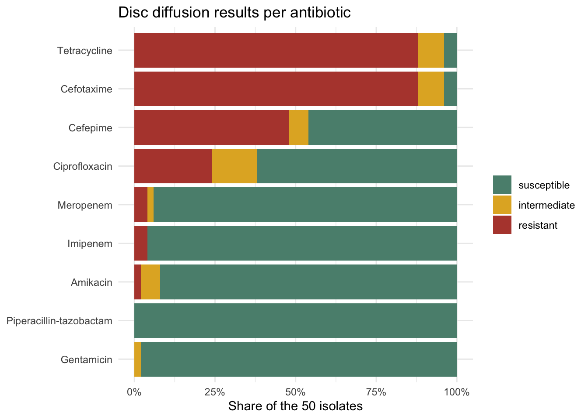

The goal of burigangaamr is to provide the antibiotic susceptibility test results of 50 Pseudomonas aeruginosa isolates from surface water at seven sites along the Buriganga River, Bangladesh, as tidy data. The isolates were tested against nine antibiotics with the Kirby-Bauer disc diffusion method. The data are republished from the supplementary tables of Sharif, Amin, Mehbub and Ratul (2024), published under CC BY 4.0 in the Journal of Water and Health (see Source and changes below).
Draft. This package is not released, has no DOI and may still change. The original authors will be notified before the first release.
Installation
You can install the development version of burigangaamr from GitHub with:
# install.packages("devtools")
devtools::install_github("openwashdata/burigangaamr")
## Run the following code in console if you don't have the packages
## install.packages(c("dplyr", "knitr", "readr", "stringr", "gt", "kableExtra"))
library(dplyr)
library(knitr)
library(readr)
library(stringr)
library(gt)
library(kableExtra)Alternatively, you can download the individual datasets as a CSV or XLSX file from the table below.
- Click Download CSV. A window opens that displays the CSV in your browser.
- Right-click anywhere inside the window and select “Save Page As…”.
- Save the file in a folder of your choice.
| dataset | CSV | XLSX |
|---|---|---|
| burigangaamr_antibiotics | Download CSV | Download XLSX |
| burigangaamr_isolates | Download CSV | Download XLSX |
| burigangaamr | Download CSV | Download XLSX |
Data
The package provides access to three data objects. burigangaamr holds one row per isolate and antibiotic, burigangaamr_isolates one row per isolate, and burigangaamr_antibiotics one row per antibiotic with the breakpoints used to interpret the zone diameters.
burigangaamr
The dataset burigangaamr contains the zone diameter and its interpretation (susceptible, intermediate or resistant) for every isolate and antibiotic. It has 450 observations and 8 variables
burigangaamr |>
head(3) |>
gt::gt() |>
gt::as_raw_html()| isolate_id | site | antibiotic_code | antibiotic | antibiotic_class | disc_content | zone_mm | interpretation |
|---|---|---|---|---|---|---|---|
For an overview of the variable names, see the following table.
| variable_name | variable_type | description |
|---|---|---|
| isolate_id | character | Identifier of the Pseudomonas aeruginosa isolate as used in the supplement: the sampling site letter (A to G), the water sample number at that site (1 to 3) and the colony letter (a to d), for example A1a. |
| site | factor | Sampling site along the Buriganga River, coded A to G as in the supplement. The article describes seven sites that differ in their point source of pollution (industrial, medical waste and municipal waste discharges among them); the supplement does not name them. |
| antibiotic_code | factor | Short code of the antibiotic disc as used in the supplement: PIT, CTX, CPM, GEN, AK, MRP, IPM, TE or CIP. |
| antibiotic | character | Name of the antibiotic. |
| antibiotic_class | factor | Class of the antibiotic: Penicillins, Cephalosporins, Aminoglycosides, Carbapenems, Tetracyclines or Fluoroquinolones. |
| disc_content | character | Amount of antibiotic on the disc used in the Kirby-Bauer disc diffusion test, in micrograms, as given in the supplement (100/10 µg for piperacillin-tazobactam). |
| zone_mm | integer | Diameter of the zone of inhibition around the disc in millimetres, from supplementary table S3. NA where the supplement shows a dash, which means no zone of inhibition was recorded; every such test is interpreted as resistant. |
| interpretation | factor | Interpretation of the zone diameter against the breakpoints in burigangaamr_antibiotics, as given in supplementary table S4: susceptible, intermediate or resistant. |
burigangaamr_isolates
The dataset burigangaamr_isolates contains one row per isolate with the number of resistant and intermediate results, the number of antibiotic classes with resistance, the antibiotics listed as nonsusceptible in the supplement and the multidrug resistance flag. It has 50 observations and 7 variables
burigangaamr_isolates |>
head(3) |>
gt::gt() |>
gt::as_raw_html()| isolate_id | site | n_resistant | n_intermediate | n_classes_resistant | nonsusceptible_antibiotics | multidrug_resistant |
|---|---|---|---|---|---|---|
For an overview of the variable names, see the following table.
| variable_name | variable_type | description |
|---|---|---|
| isolate_id | character | Identifier of the Pseudomonas aeruginosa isolate as used in the supplement: the sampling site letter (A to G), the water sample number at that site (1 to 3) and the colony letter (a to d), for example A1a. |
| site | factor | Sampling site along the Buriganga River, coded A to G as in the supplement. |
| n_resistant | integer | Number of the nine antibiotics to which the isolate is resistant, counted from the interpretations in burigangaamr. |
| n_intermediate | integer | Number of the nine antibiotics with an intermediate result, counted from the interpretations in burigangaamr. |
| n_classes_resistant | integer | Number of antibiotic classes (of six) with at least one resistant result, counted from burigangaamr. Equals the count reported per strain in supplementary table S6. |
| nonsusceptible_antibiotics | character | Codes of the antibiotics with a resistant or intermediate result, comma separated, as listed per strain in supplementary table S6. |
| multidrug_resistant | logical | Whether supplementary table S6 flags the isolate as multidrug resistant, which the article defines as resistance to three or more antibiotic classes. TRUE for 14 isolates; the abstract and table S7 count 13, the difference being isolate B1c, which is resistant to two classes. |
burigangaamr_antibiotics
The dataset burigangaamr_antibiotics contains the nine antibiotics with their class, the disc content and the zone diameter breakpoints for resistant, intermediate and susceptible. It has 9 observations and 8 variables
burigangaamr_antibiotics |>
head(3) |>
gt::gt() |>
gt::as_raw_html()| antibiotic_code | antibiotic | antibiotic_class | disc_content | breakpoint_resistant_max | breakpoint_intermediate_min | breakpoint_intermediate_max | breakpoint_susceptible_min |
|---|---|---|---|---|---|---|---|
For an overview of the variable names, see the following table.
| variable_name | variable_type | description |
|---|---|---|
| antibiotic_code | character | Short code of the antibiotic disc as used in the supplement: PIT, CTX, CPM, GEN, AK, MRP, IPM, TE or CIP. |
| antibiotic | character | Name of the antibiotic. |
| antibiotic_class | factor | Class of the antibiotic: Penicillins, Cephalosporins, Aminoglycosides, Carbapenems, Tetracyclines or Fluoroquinolones. |
| disc_content | character | Amount of antibiotic on the disc used in the Kirby-Bauer disc diffusion test, in micrograms, as given in the supplement (100/10 µg for piperacillin-tazobactam). |
| breakpoint_resistant_max | integer | Largest zone diameter in millimetres that is interpreted as resistant, from supplementary table S2. |
| breakpoint_intermediate_min | integer | Smallest zone diameter in millimetres that is interpreted as intermediate, from supplementary table S2. |
| breakpoint_intermediate_max | integer | Largest zone diameter in millimetres that is interpreted as intermediate, from supplementary table S2. |
| breakpoint_susceptible_min | integer | Smallest zone diameter in millimetres that is interpreted as susceptible, from supplementary table S2. |
Example
The plot shows, for each antibiotic, the share of the 50 isolates that tested susceptible, intermediate or resistant. Resistance is concentrated in cefotaxime and tetracycline, where 88 percent of the isolates were resistant, while every isolate was susceptible to piperacillin-tazobactam.
library(burigangaamr)
library(dplyr)
library(ggplot2)
shares <- burigangaamr |>
count(antibiotic, interpretation) |>
group_by(antibiotic) |>
mutate(share = n / sum(n)) |>
ungroup()
antibiotic_order <- shares |>
group_by(antibiotic) |>
summarise(resistant = sum(share[interpretation == "resistant"])) |>
arrange(resistant) |>
pull(antibiotic)
shares |>
mutate(antibiotic = factor(antibiotic, levels = antibiotic_order)) |>
ggplot(aes(x = share, y = antibiotic, fill = interpretation)) +
geom_col() +
scale_x_continuous(labels = scales::label_percent()) +
scale_fill_manual(values = c(susceptible = "#5B8E7D",
intermediate = "#E1B12C",
resistant = "#B5473B")) +
labs(x = "Share of the 50 isolates", y = NULL, fill = NULL,
title = "Disc diffusion results per antibiotic") +
theme_minimal()
Source and changes
The data come from the supplementary material of Sharif, D. I., Amin, F., Mehbub, M. H. and Ratul, R. I. (2024). Distribution and antibiotic resistance patterns of Pseudomonas aeruginosa across different point sources of pollution in the Buriganga River, Bangladesh. Journal of Water and Health, 22(12). https://doi.org/10.2166/wh.2024.270. The article and its supplement are published under the Creative Commons Attribution 4.0 licence. The original authors are listed in the package as data contributors; they have not reviewed this package.
We changed the material. The eight Word tables of the supplement were read into R (the script is in data-raw/data_processing.R). The two isolate by antibiotic matrices (zone diameters in table S3, interpretations in table S4) were reshaped into one observation per isolate and antibiotic, the antibiotic codes were expanded with names, classes and disc contents from tables S1 and S2, the breakpoints of table S2 were split into numbers, and the counts per isolate were derived from the observations. Tables S5, S7 and S8 are summaries and are not republished; the processing script reproduces every percentage of S5 and S8 from the data.
Two statements of the supplement and the article do not agree with each other, and the package keeps the supplement as it is:
- Table S6 flags 14 isolates as multidrug resistant, while table S7 and the abstract count 13. The difference is isolate B1c, which is resistant to two antibiotic classes.
- The abstract reports that 4 percent of the isolates (two) were resistant to both imipenem and meropenem; in table S4 one isolate is.
The sampling dates and the names of the seven sites are given in the article, which is not open to automated readers; the package records the sites by their letter codes.
License
Data are available as CC-BY.
Citation
Please cite this package using:
citation("burigangaamr")
#> To cite package 'burigangaamr' in publications use:
#>
#> Schöbitz L (2026). _burigangaamr: Antibiotic Resistance of
#> Pseudomonas aeruginosa Isolates from the Buriganga River,
#> Bangladesh_. R package version 0.0.0.9000,
#> <https://github.com/openwashdata/burigangaamr>.
#>
#> A BibTeX entry for LaTeX users is
#>
#> @Manual{,
#> title = {burigangaamr: Antibiotic Resistance of Pseudomonas aeruginosa Isolates from the
#> Buriganga River, Bangladesh},
#> author = {Lars Schöbitz},
#> year = {2026},
#> note = {R package version 0.0.0.9000},
#> url = {https://github.com/openwashdata/burigangaamr},
#> }